"Ognuno porta con sé un piccolo pezzo di mondo, un sogno e una storia da raccontare". Ban Ki-moon
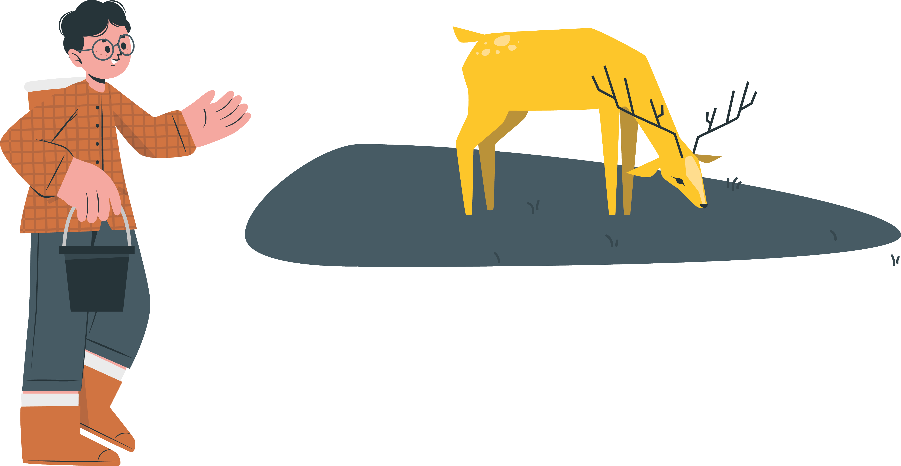 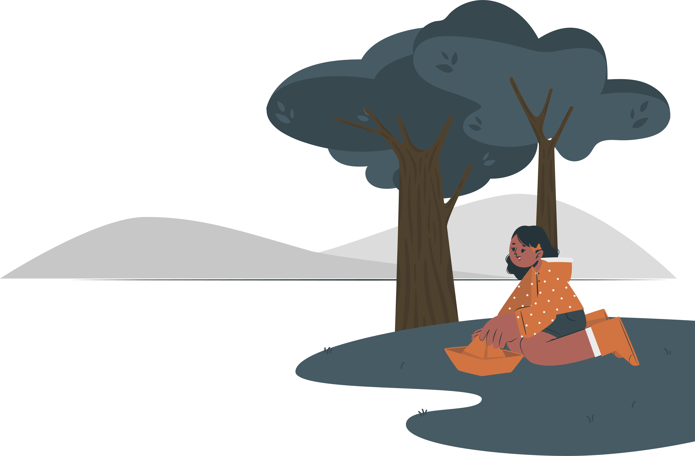 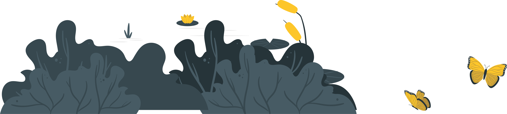 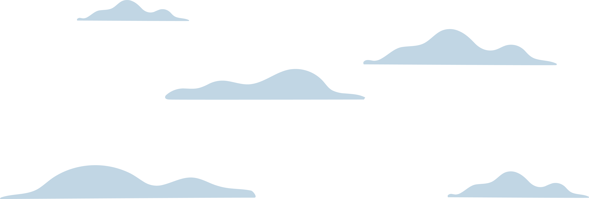MISSION L'obiettivo è quello di costruire comprensione, empatia e solidarietà, dando voce ai giovani immigrati, ai figli di immigrati e alle loro storie di integrazione in Italia. Tutto questo contribuisce a informare ed educare il pubblico, ma anche a celebrare la diversità promovendo una società più inclusiva e accogliente. Le storie personali possono fungere come potenti strumenti per la costruzione di una società multiculturale; ma possono anche essere di aiuto a tutti coloro, che vivono situazioni simili.
.gif) 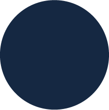
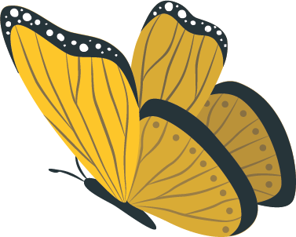
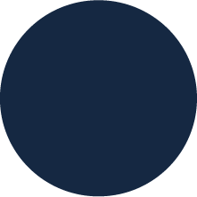
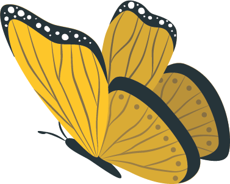
CONDIVISIONE Condividere le storie personali ispira, educa e sostiene gli altri. Permette di creare una connessione umana autentica, una rete di supporto migliorando il benessere collettivo.
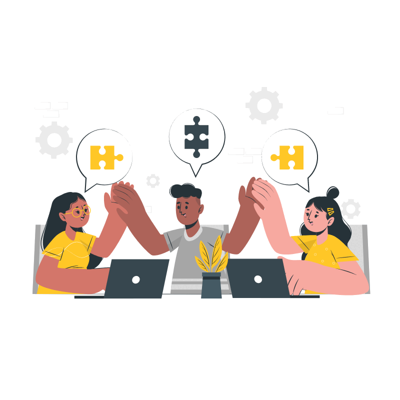RISPETTO Mostrare rispetto vuol dire riconoscere la vulnerabilità e il coraggio di chi condivide. Il rispetto valorizza le esperienze altrui, promuove la fiducia reciproca e la crescita personale di tutti i coinvolti.

PRAGMATISMO Uno degli obiettivi è quello di rendere le esperienze altrui strumenti utili. Le storie offrono esempi concreti e strategie pratiche, aiutando giovani e adulti che si trovano in situazioni simili a superare le loro difficoltà.
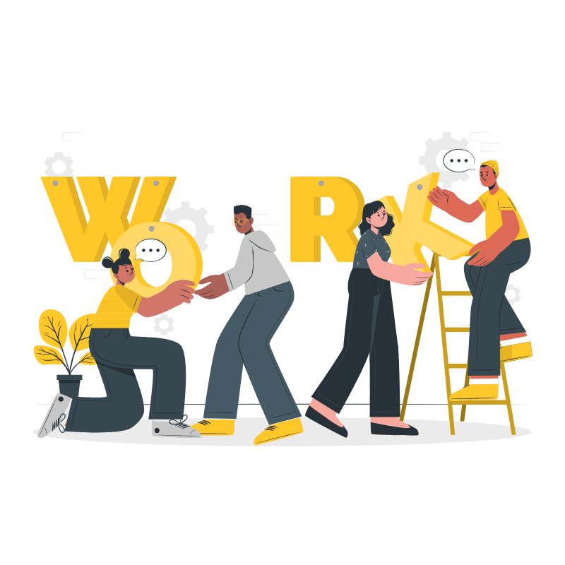LE STORIE Scopri i racconti di integrazione di adulti e bambini ed entra in connessione con le loro vite.
senzaconfini Il progetto nasce da un gruppo di studenti universitari impegnati nella sensibilizzazione e nell’informazione del tema dell'immigrazione. Il nostro obiettivo è costruire una comprensione più profonda e umana delle esperienze e delle sfide affrontate dagli immigrati, promuovendo l'empatia e la consapevolezza. Se desideri condividere la tua storia o parlare con noi, contattaci: la tua voce è importante e può fare la differenza.
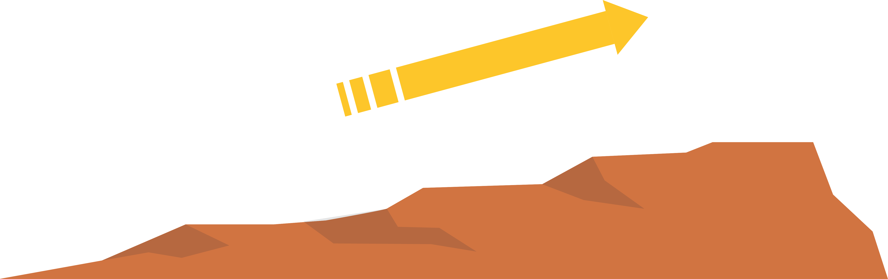
 010 596 589
senzaconfini@info.it
senza confini
Università di Genova
Stradone Sant'Agostino, 37, 16123 Genova GE
010 596 589
senzaconfini@info.it
senza confini
Università di Genova
Stradone Sant'Agostino, 37, 16123 Genova GE